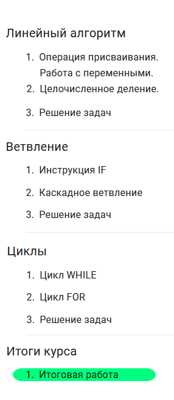

Урок 23
27.03.2023, Пн lesson /
Курс по Пайтону Сергея Спиркина
 |
|---|
|  |
Задача 4.1.1
Напишите программу, которая в последовательности целых чисел определяет количество чисел, кратных 5 или 9. Программа получает на вход целые числа, количество введённых чисел неизвестно, последовательность чисел заканчивается числом 0 (0 — признак окончания ввода, не входит в последовательность). Количество чисел не превышает 1000. Введённые числа по модулю не превышают 30 000. Программа должна вывести одно число: количество чисел, кратных 5 или 9.
Решение:
z = 0
n = -1
while n != 0:
n = int(input('Введите следующее число:'))
if (n > 0) and (n % 5 == 0 or n % 9 == 0):
z += 1
print(z)Sample Input:
15
11
12
18
20
26
27
04Задача 4.1.2
Напишите программу, которая в последовательности натуральных чисел определяет максимальное число, оканчивающееся на 3. Программа получает на вход количество чисел в последовательности, а затем сами числа. В последовательности всегда имеется число, оканчивающееся на 3. Количество чисел не превышает 1000. Введённые числа не превышают 30 000. Программа должна вывести одно число — максимальное число, оканчивающееся на 3.
Решение:
z = 0
n = int(input('Введите количество чисел:'))
for i in range(1, n + 1):
x = int(input('Введите ' + str(i) + '-е число:'))
if (x % 10 == 3) and (x > z):
z = x
print(z)Sample Input:
3
53
13
4653